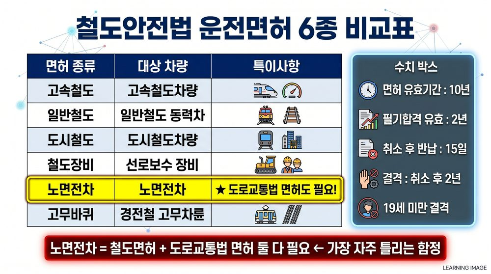
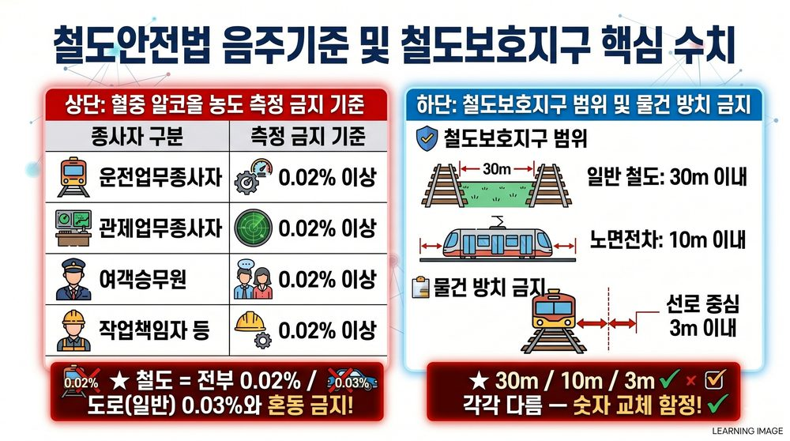
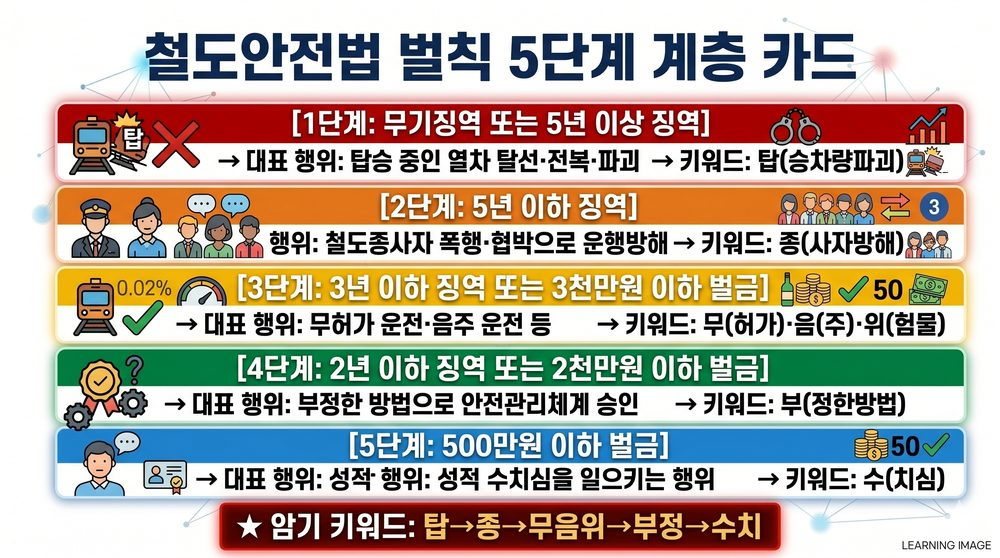
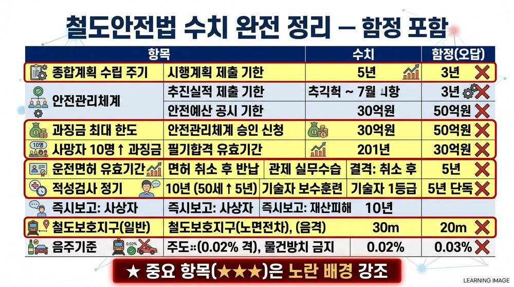

PART 1 · 기본개념·종합계획 (1편) ▼
C-01철도안전법 목적·용어

철도안전법 목적·용어 개념도
목적: 철도사고 예방과 피해 경감, 공공복리 증진, 국민의 생명·신체·재산 보호
❌ "철도산업 발전"은 이 법의 목적이 아님 (철도산업발전기본법)
❌ "중대한 운행장애 = 사망자 발생 AND 5억원 이상 (둘 다 충족)" → OR 조건, 어느 하나만 해당해도 중대한 운행장애
❌ "중대한 운행장애 = 사망자 발생" → 사상자(사망+부상) 기준, 부상자 발생도 포함
| 용어 | 정의 | 함정 |
|---|---|---|
| 철도사고 | 사망·부상 또는 물건 파손을 일으킨 사고 | |
| 준사고 | 사고는 아니나 사고로 이어질 수 있었던 것 | 사고≠준사고 |
| 운행장애 | 열차운행을 방해하는 상황 | |
| 중대한 운행장애 | 사상자(사망·부상자) 발생 또는 5억원 이상 재산피해 | 어느 하나만 해당 (OR) ✅ |
C-02철도종사자 7종

철도종사자 7종 분류도
암기키워드: 운관여여작철대
운전 → 관제 → 여객승무원 → 여객역무원 → 작업책임자 → 철도운행안전관리자 → 대통령령
운전 → 관제 → 여객승무원 → 여객역무원 → 작업책임자 → 철도운행안전관리자 → 대통령령
❌ "철도경영에 관한 조언업무 수행자" → 철도종사자 아님
C-03철도안전 종합계획 핵심 수치

종합계획 수립절차 타임라인
| 항목 | 수치 | 함정 |
|---|---|---|
| 수립 주기 | 5년마다 | 3년 ❌ |
| 수립 주체 | 국토교통부장관 | |
| 시행계획 제출 기한 | 전년도 10월 말 | 11월 말 ❌ |
| 추진실적 제출 기한 | 2월 말 | 3월 말 ❌ |
| 안전예산 공시 기한 | 5월 말 | |
| 안전예산 공시 주체 | 국토교통부장관 또는 시·도지사 | 국토부장관만 ❌ |
PART 2 · 안전관리체계·과징금·우수운영자 (2편) ▼
C-04안전관리체계 승인 절차

안전관리체계 승인절차
신청 기한: 철도운영 개시 90일 전까지 → 국토교통부장관에게 승인 신청
❌ 60일 전, 30일 전 → 반드시 90일 전
검사 유예 불가 사유: 민·형사 소송 계속 중 (기출 함정!)
C-05안전관리체계 취소 — 필요적 vs 임의적

필요적·임의적 취소 비교
| 구분 | 사유 | 법 표현 |
|---|---|---|
| 필요적 취소 | 거짓·부정한 방법으로 승인 | 취소하여야 한다 |
| 임의적 취소 | 변경승인 미이행 | 취소할 수 있다 |
| 임의적 취소 | 안전관리체계 지속 미유지 | 취소할 수 있다 |
| 임의적 취소 | 시정조치 미이행 | 취소할 수 있다 |
❌ "부정한 방법으로 승인 = 임의적 취소" → 반드시 필요적 취소
C-06과징금·우수운영자

과징금·우수운영자 수치
| 항목 | 내용 | 함정 |
|---|---|---|
| 과징금 최대 한도 | 30억원 | 50억원 ❌ |
| 사망자 10명 이상 | 20억원 | 30억원 ❌ |
| 우수운영자 지정 주체 | 국토교통부장관 | 지방자치단체장 ❌ |
| 안전관리수준평가 | 실시할 수 있다 (임의) | 의무(하여야) ❌ |
❌ 안전관리수준평가 = 의무 → 임의(할 수 있다)
PART 3 · 운전면허·관제자격·적성검사 (3편) ▼
C-07운전면허 6종

운전면허 6종 분류표
| 법정 면허 명칭 (시행령 제11조) | 대상 차량 | 특이사항 |
|---|---|---|
| 고속철도차량 운전면허 | 고속철도차량 (KTX 등) | |
| 제1종 전기차량 운전면허 | 간선철도·광역전철 전동차 | |
| 제2종 전기차량 운전면허 | 도시철도 전동차 | |
| 디젤차량 운전면허 | 디젤기관차·동차 | |
| 철도장비 운전면허 | 선로보수 등 장비 | |
| 노면전차 운전면허 | 노면전차 | ⚠️ 도로교통법 운전면허도 필요 |
❌ "일반철도 운전면허" → 법정 명칭 아님. 제1종 전기차량 또는 디젤차량으로 구분
❌ "도시철도 운전면허" → 법정 명칭 아님. 제2종 전기차량 운전면허가 정확
❌ "고무바퀴 경전철 운전면허" → 법정 명칭 아님. 6종 목록에 없음
❌ "노면전차 운전면허만 있으면 운전 가능" → 도로교통법 면허도 있어야
★ 암기: 고·1전·2전·디·장·노 (고속철도차량 / 제1종전기 / 제2종전기 / 디젤 / 철도장비 / 노면전차)
C-08운전면허 핵심 수치

운전면허 핵심 수치 5개
| 항목 | 수치 | 함정 |
|---|---|---|
| 면허 유효기간 | 10년 | 5년 ❌ |
| 필기시험 합격 유효기간 | 2년 | 1년 ❌ |
| 취소 후 면허증 반납 기한 | 15일 이내 | 30일 ❌ |
| 결격: 취소 후 경과 기간 | 2년 미경과 | 5년 ❌ |
| 결격: 최저 나이 | 19세 미만 |
★ 암기법: 유효기간 10년 / 나머지 핵심 = 2년(결격·합격유효) + 15일(반납)
C-09운전적성검사·관제자격증명

운전적성검사 3종 주기
| 종류 | 시기 | 함정 |
|---|---|---|
| 최초 | 면허 취득 전 | |
| 정기 | 10년마다 (50세 이상 5년마다) | 모두 5년 ❌ |
| 특별 | 철도사고 발생 후 / 업무적합성 의심 시 |
| 항목 | 내용 |
|---|---|
| 검사인력 기준 | 3명 이상 |
| 지정취소 후 결격 | 2년 |
| 관제 실무수습 | 100시간 |
❌ 검사인력 1명 / 취소 후 결격 5년 / 관제 실무수습 50시간 → 모두 오답
PART 4 · 형식승인·정비조직·기술자·이력·영상 (4편) ▼
C-10형식승인 검사방법 3종

형식승인 검사방법 3종
| 검사방법 | 내용 |
|---|---|
| 설계적합성검사 | 설계가 기술기준에 적합한지 검사 |
| 합치성검사 | 부품→구성품→완성품이 설계와 합치하는지 |
| 용품형식시험 | 철도용품이 기준에 맞는지 시험 |
❌ "신뢰도 검사" → 형식승인 검사방법 아님. 선지에 나오면 무조건 오답
★ 완성검사: 판매하기 전에 받아야 함 (판매 후 ❌)
C-11형식승인 경미한 사항·면제

형식승인 경미 사항·면제 비교
| 구분 | 내용 |
|---|---|
| 신고 충분 (경미) | 차체형상 변경, 안전과 무관 설비, 입증가능 부품 규격 변경 |
| 변경승인 필요 | 동일성능으로 입증할 수 없는 부품 규격 변경 |
❌ "입증할 수 없는 부품 규격 변경 = 신고 충분" → 입증 가능할 때만 신고 충분
| 면제 가능 | 면제 불가 |
|---|---|
| 시험·연구·개발 목적 | 중량분포에 영향 안 미치는 장치·부품 |
| 수출 목적 |
C-12정비조직·철도기술자·이력·영상보안장치

정비조직·기술자·이력 수치표
| 항목 | 내용 | 함정 |
|---|---|---|
| 정비조직 인증취소 후 결격 | 2년 | 5년 ❌ |
| 기술자 1등급 기준 | 80점 이상 | |
| 기술자 보수훈련 | 5년마다 35시간 | 20·25·30시간 ❌ |
| 이력 보고 주기 | 정기적으로 | 매월 ❌ |
| 지위 승계 신고 | 승계일부터 1개월 이내 | |
| 철도용품 계획서 통보 | 15일 이내 | 7일 ❌ |
❌ 인증정비조직 준수사항에 "이력 효과적 관리" 포함 → 준수사항 아님
❌ 이력 금지행위: "너무 많은 내용 입력" → 금지행위 아님
📷 영상보안장치
| 항목 | 내용 | 함정 |
|---|---|---|
| 설치 의무 장소 | 철도차량 내부 · 승강장 · 대합실 · 건널목 등 국토교통부령으로 정하는 장소 | 임의 설치 ❌ |
| 자료 보존 기간 | 촬영일부터 30일 이상 | 90일 ❌ |
| 금지행위 | 영상정보를 임의로 열람·제공·삭제하는 행위 | |
| 열람·제공 허용 | 철도사고 조사 / 범죄수사 / 법원 제출용 | 일상 열람 ❌ |
| 고장 시 조치 | 즉시 대체 수단 마련 + 국토교통부장관에게 보고 |
❌ "영상 자료 보존 기간 90일" → 30일 이상 (30일이 기준)
★ 영상 임의삭제 = 금지행위 → 3년 이하 징역 또는 3천만원 이하 벌금 대상
PART 5 · 음주·금지행위·보호지구·보안·관제 (5편) ▼
C-13음주기준 — 제1항(0.02%) vs 제2항(0.03%)

음주기준·철도보호지구 수치 암기카드
| 조문 구분 | 기준 | 해당 종사자 |
|---|---|---|
| 제41조 제1항 (1~4호) | 0.02% 이상 | 운전업무종사자 · 관제업무종사자 · 여객승무원 · 철도운행안전관리자 |
| 제41조 제2항 (대통령령) | 0.03% 이상 | 여객역무원 · 작업책임자 · 신호기취급 · 현장감독 · 점검정비 등 |
❌ "여객승무원 = 0.03% 기준" → 여객승무원은 제1항 = 0.02%
❌ "5~7호 = 0.03%" → 제2항 조문에 호수 없음. "대통령령으로 정하는 사람"이 정확한 표현
❌ "여객역무원 = 0.02%" → 제1항에 없음, 제2항 0.03% 적용 대상
C-14철도보호지구·직무장비
| 항목 | 수치 | 함정 |
|---|---|---|
| 일반철도 보호지구 | 경계선으로부터 30m 이내 | 50m ❌ |
| 노면전차 보호지구 | 경계선으로부터 10m 이내 | 5m ❌ |
| 물건방치 금지 범위 | 궤도 중심 양측 3m 이내 | 2m·5m ❌ |

직무장비 목록 (권총 제외)
직무장비 5가지: 수갑 / 포승 / 가스분사기 / 전자충격기 / 경비봉
❌ "직무장비 = 권총 포함" → 권총은 목록에 없음
C-15관제업무·철도운행안전관리자

철도운행안전관리자 배치 기준
| 항목 | 내용 |
|---|---|
| 관제 제외 대상 | 신설선 또는 개량선 (정상운행 전) |
| 관제 업무 아닌 것 | 철도승객 유치를 위한 홍보 |
| 운행안전관리자 고의·중과실 사고 | 임의적 취소 (할 수 있다) |
❌ "정상운행 시작 후 개량선 = 관제 제외 대상" → 정상운행 후면 제외 불가
❌ "고의·중과실 사고 = 필요적 취소(하여야)" → 임의적 취소
🚦 철도운행안전관리자 배치 기준
| 항목 | 내용 | 함정 |
|---|---|---|
| 배치 의무 상황 | 철도차량이 단독으로 운행하거나 일반인이 접근할 수 있는 선로에서 운행하는 경우 | 모든 열차 ❌ |
| 배치 수 | 해당 열차 1명 이상 | |
| 자격 요건 | 국토교통부장관이 지정한 교육훈련기관에서 교육 이수 | 철도공사 자체 교육 ❌ |
| 임면 신고 | 임면일부터 15일 이내 → 국토교통부장관에게 신고 | 30일 ❌ |
| 자격증명 취소 사유 | 거짓·부정 취득 (필요적) / 고의·중과실 사고 (임의적) | 고의·중과실 = 필요적 ❌ |
★ 배치 기준 핵심: 단독 운행 또는 일반인 접근 가능 선로 운행 시 1명 이상 배치 의무
❌ 임면 신고 기한 "30일" → 15일 이내
PART 6 · 사고보고·청문·벌칙 (6편) ▼
C-16즉시보고 기준·청문대상

즉시보고 기준·청문대상
| 항목 | 기준 | 함정 |
|---|---|---|
| 사상자 즉시보고 | 3명 이상 | 1명 ❌ |
| 재산피해 즉시보고 | 5천만원 이상 | 3천만원 ❌ |
★ 청문 대상 포함: 안전관리체계 취소, 운전면허 취소, 관제자격증명 취소, 형식승인 취소, 정비기술자 취소, 운행안전관리자 취소 등
❌ "품질인증의 취소 = 청문 대상" → 청문 대상 아님
❌ 재정지원 대상: "철도승객 권익보호단체" → 재정지원 불가
C-17벌칙 5단계 체계

벌칙 5단계 계층표
| 벌칙 | 행위 |
|---|---|
| 무기징역 또는 5년↑ | 탑승 운행 중 차량 소훼·탈선·충돌·파괴 |
| 5년↓ / 5천만원↓ | 폭행·협박으로 종사자 직무집행 방해 |
| 3년↓ / 3천만원↓ | 무승인 운영 / 음주약물 업무 / 금지 위험물 탁송 |
| 2년↓ / 2천만원↓ | 거짓·부정한 방법으로 안전관리체계 승인 |
| 500만원↓ | 성적 수치심을 일으키는 행위 |
★ 암기: 탑→종→무음위→부정→수치
❌ "부정한 방법 안전관리체계 = 3년 이하" → 2년 이하
❌ "탑승차량 파괴 = 5년 이하" → 5년 이상 (무기징역 or 5년↑)
C-18핵심수치 통합 암기

철도안전법 핵심수치 통합 암기표
C-19보강 — 열차운행 일시중지 · 보호지구 신고함정 · 벌칙 두음

보강 3개 주제 요약
① 열차운행 일시중지
사유(발생 또는 예상): 천재지변·악천후로 인한 재해 / 열차운행에 중대한 장애.
면책: 일시중지 조치는 고의·중과실이 없으면 민사상 책임을 지지 아니한다.
사유(발생 또는 예상): 천재지변·악천후로 인한 재해 / 열차운행에 중대한 장애.
면책: 일시중지 조치는 고의·중과실이 없으면 민사상 책임을 지지 아니한다.
함정: 이용자 요구·민원은 일시중지 사유가 아님. / “일시중지하면 민사책임을 진다” → 오답(고의·중과실 없으면 면책).
② 철도보호지구 — 신고 필요 vs 불필요
| 신고 필요 | 신고 불필요(함정) |
|---|---|
| 토지 형질변경·굴착 / 토석·자갈·모래 채취 / 건축물 신·개·증축 / 인공구조물 설치 / 나무 식재(대통령령) | 건축물 리모델링 |
보호지구 범위 재확인: 일반 30m · 노면전차 10m · 물건방치 금지 궤도 양측 3m.
③ 벌칙 5단계 — 두음 “탑·종·무음위·부정·수치”
| 벌칙 | 행위 |
|---|---|
| 무기 또는 5년 이상 | 탑 — 탑승 운행 중 차량 소훼·탈선·충돌·파괴 |
| 5년 이하 / 5천만원 이하 | 종 — 종사자 폭행·협박 직무집행 방해 |
| 3년 이하 / 3천만원 이하 | 무·음·위 — 무승인 운영 / 음주·약물 업무 / 위험물 탁송 |
| 2년 이하 / 2천만원 이하 | 부정 — 거짓·부정한 방법으로 안전관리체계 승인 |
| 500만원 이하 벌금 | 수치 — 성적 수치심을 일으키는 행위 |
혼동 주의: 탑승차량 파괴 = 5년 이상(무기 포함) ↔ 종사자 방해 = 5년 이하. / 부정승인 = 2년 이하(3년 아님).